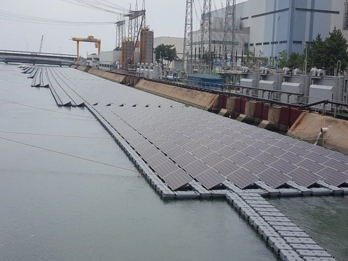

Special Types
특수 유형 태양광
2024년 서울 여의도·마곡에서 건물일체형(BIPV) 2건, 가평에서 리파워링 1건을 준공했고 보령화력 수상태양광 시공에 참여했습니다. 세 유형 모두 일반 지상·지붕형과 다른 공정을 요구합니다.
건물일체형 BIPV
모듈이 외장재(커튼월·스팬드럴)를 겸합니다. 발전량보다 외관·방수·화재 안전이 먼저이고, 건축 설계 단계부터 외장 시공사와 공정을 맞춰야 합니다. 수직면 설치라 발전량 검토 기준도 다릅니다.
- 여의도 사학재단 418.9kW (2024)
- 마곡 CP 163.9kW (2024)

수상형
저수지·담수 위에 부력체를 띄우고 계류(앵커)로 고정합니다. 수위 변동과 풍파를 견디면서 어레이 간격을 유지해야 하고, 모든 부재가 상시 습기에 노출되므로 내식성 소재가 필수입니다.
- 부력체 내구성 · 계류 하중 검토
- 육상 수전설비까지 케이블 경로
- 보령화력 수상태양광 시공 참여

리파워링
10년 이상 된 발전소는 모듈 효율 저하와 인버터 노후로 발전량이 눈에 띄게 줄어듭니다. 구조물과 계통연계 설비는 두고 모듈·인버터만 최신 제품으로 바꾸면 같은 부지에서 용량과 발전량이 늘어납니다.
- 기존 구조물 하중 여유 · 부식 상태 검토
- 신규 모듈 규격에 맞는 보강 · 스트링 재구성
- 용량 변경 시 인허가 변경 필요
- 가평 위곡 리파워링 137kW (2024)
Scope of Work
직접 수행 공종
토목 · 구조물 제작 · 구조물 공사 · 전기 · 계통연계를 한 회사가 맡습니다. 공종 사이의 대기와 조율이 사라져 공정이 짧아지고, 그만큼 공사비가 낮아집니다.
토목공사
경사·레벨 측정 장비를 동원해 최적의 토목공사를 구축합니다.
구조물 제작
아연도금·포스맥 등 경쟁력 있는 소재로 구조물을 제작합니다.
구조물 공사
숙련 인력을 투입해 신속하고 정확하게 설치합니다.
전기공사
전기설비 규정에 따라 정확하고 안전하게 설계·시공합니다. 전기공사업 등록 기업.
계통연계 · 시운전
한전과의 고압케이블 연결 작업과 시운전까지 마무리합니다.
Contact
태양광 발전소 시공 문의
사업 검토 단계의 상담부터 지명원·실적증명 자료 요청까지, 전화 또는 이메일로 연락 주시면 담당자가 안내해 드립니다.